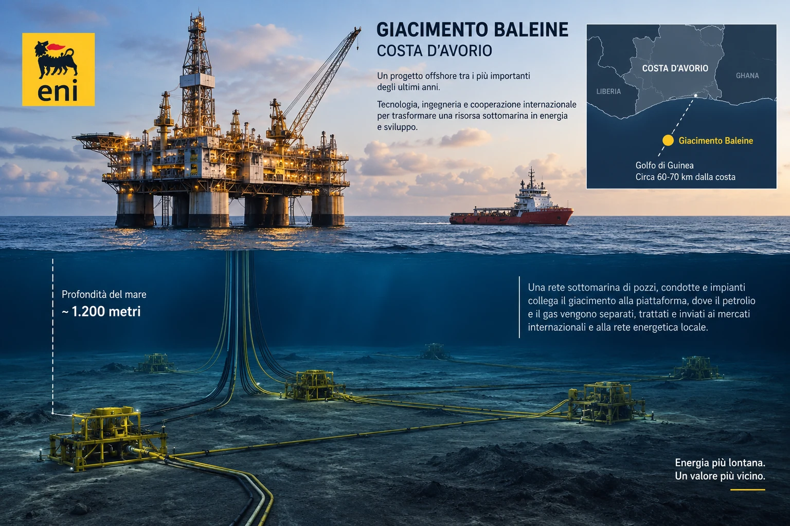

In questo dossier
- La notizia che sembra piccola
- Prima di tutto: chi sono i protagonisti
- Il rischio iniziale: Eni mette il 90%, Petroci il 10%
- Il 10% di Petroci: non è una royalty
- Il passaggio dal 10% a oltre il 20%: quando lo Stato diventa investitore
- Petroci non estrae da sola: Eni resta il cervello operativo
- Chi paga i costi se Eni estrae per tutti?
- Dalla scoperta alla produzione in due anni
- Quanto costa costruire Baleine
- Il momento della vendita: non troppo presto e non troppo tardi
- Attenzione ai numeri delle cessioni
- Il dubbio della bolla finanziaria
- La Costa d’Avorio: proprietà della risorsa e partecipazione industriale
- Dove va il petrolio
- Il collegamento con Cassa Depositi e Prestiti
- Perché questo interessa lo Stato italiano
- La vera forza del modello Baleine
- Contraddittorio: cosa può andare storto
- Conclusione — Il metodo
- Fonti documentali
La notizia che sembra piccola
Il 16 settembre 2026 una notizia finanziaria di poche righe dice che Eni ha completato la cessione del 10% del progetto Baleine, in Costa d’Avorio, a SOCAR. Letta così, sembra una normale operazione di portafoglio: una grande compagnia petrolifera vende una partecipazione a un’altra compagnia petrolifera.
Ma Baleine non è una società e non è un titolo finanziario. È un gigantesco giacimento di petrolio e gas scoperto da Eni al largo della Costa d’Avorio, nell’Africa occidentale. Ed è proprio seguendo quel 10% che emerge un modello industriale molto più interessante della cessione in sé.
Eni scopre un giacimento che non possiede, perché gli idrocarburi appartengono allo Stato ivoriano. Ottiene però il diritto contrattuale di esplorarlo e sfruttarlo, assume quasi tutto il rischio iniziale, organizza la tecnologia e la logistica, porta il campo in produzione in tempi record e, quando il progetto ha ormai dimostrato di funzionare, vende progressivamente parte delle proprie quote. Incassa capitale, riduce gli investimenti futuri a proprio carico, distribuisce il rischio a nuovi soci e continua a essere l’operatore del progetto.
Alla fine Eni non possiede il sottosuolo della Costa d’Avorio. Ma conserva il 37,25% del progetto Baleine, mentre continua a guidarne l’operatività. Per una società il cui maggiore azionista diretto è Cassa Depositi e Prestiti (CDP) e sulla quale il Ministero dell’Economia e delle Finanze (MEF) esercita il controllo di fatto, non è un dettaglio.
Prima di tutto: chi sono i protagonisti
Eni è il gruppo energetico italiano che opera nell’esplorazione, produzione, trasformazione e commercializzazione di energia. È una società quotata, ma CDP detiene il 30,92% del capitale e il MEF il 2,17%. Eni dichiara che il Ministero esercita il controllo di fatto sulla società attraverso la partecipazione diretta e quella detenuta tramite CDP.
Société Nationale d’Opérations Pétrolières de Côte d’Ivoire (PETROCI) è la compagnia petrolifera nazionale ivoriana. È il braccio industriale dello Stato nel settore degli idrocarburi: ricerca, esplorazione, produzione, trasporto, stoccaggio e commercio.
Vitol è uno dei maggiori gruppi privati mondiali attivi nel commercio di energia e materie prime. Non è la compagnia petrolifera di uno Stato: è un grande operatore privato globale, attivo anche nella produzione e nelle infrastrutture.
State Oil Company of the Republic of Azerbaijan (SOCAR) è la compagnia energetica controllata dallo Stato dell’Azerbaijan e opera lungo tutta la filiera: esplorazione, produzione, raffinazione, trasporto, commercio e distribuzione.
Baleine, che in francese significa “balena”, è invece il giacimento. È situato in mare aperto, circa 60-70 chilometri al largo della costa ivoriana, in acque profonde circa 1.200 metri. In gergo petrolifero si dice offshore: significa semplicemente che il giacimento è in mare e non sulla terraferma.
Il rischio iniziale: Eni mette il 90%, Petroci il 10%
Quando Eni scopre Baleine nel 2021 nel blocco CI-101, il consorzio esplorativo è composto da Eni al 90% e Petroci al 10%. La stessa ripartizione viene indicata nel blocco adiacente CI-802, sul quale la struttura del giacimento si estende.
Il punto è essenziale: quel 90% non significa che Eni possieda il 90% del petrolio sotto il mare. La risorsa resta della Costa d’Avorio. Il 90% indica la partecipazione di Eni nel soggetto contrattuale che si assume il rischio e sostiene le operazioni secondo il Contratto di Condivisione della Produzione.
Il Contratto di Condivisione della Produzione, in inglese Production Sharing Contract, è il meccanismo con cui lo Stato concede a un operatore il diritto di cercare e produrre idrocarburi senza cedere la proprietà del sottosuolo. Il consorzio investe, recupera i costi riconosciuti secondo le regole contrattuali e divide la produzione economica residua con lo Stato.
Per questo 90% di partecipazione non significa automaticamente 90 barili su ogni 100 estratti. Prima interviene il contratto con lo Stato: una parte della produzione serve al recupero dei costi, una parte viene ripartita come profitto tra Stato e consorzio, e soltanto all’interno della quota spettante al consorzio operano le percentuali dei singoli partner.
Il 10% di Petroci: non è una royalty
Il primo 10% di Petroci è un elemento particolare del modello ivoriano. Non è una royalty, cioè non è un prelievo automatico del 10% sul fatturato o sul petrolio lordo. È una partecipazione economica nel progetto.
Durante la fase esplorativa quella quota iniziale è protetta: Petroci non sostiene il rischio della ricerca nello stesso modo dell’operatore. In sostanza, Eni investe sapendo che può anche perforare e non trovare nulla, mentre Petroci entra nel progetto con una partecipazione iniziale che non richiede lo stesso esborso esplorativo.
Questo rende economicamente diverso il primo 10% ivoriano da un normale 10% acquistato sul mercato. I “barili” riferibili a quella partecipazione hanno per Petroci un costo iniziale inferiore rispetto a quelli di chi ha finanziato la ricerca. Non valgono di più sul mercato, ma possono rendere di più rispetto al capitale effettivamente rischiato.
Il passaggio dal 10% a oltre il 20%: quando lo Stato diventa investitore
Il contratto del blocco CI-802 prevedeva inoltre una partecipazione aggiuntiva di Petroci fino al 13,1% oltre alla quota iniziale. Il governo ivoriano presentò pubblicamente questa clausola come un miglioramento rispetto a precedenti contratti, nei quali la partecipazione aggiuntiva era inferiore.
La differenza è decisiva: la quota iniziale e la quota aggiuntiva non hanno lo stesso significato economico. La prima protegge la presenza dello Stato nel progetto durante la fase rischiosa. La seconda trasforma Petroci in un co-investitore più pesante: per quella parte aggiuntiva entra anche negli obblighi finanziari dello sviluppo.
Oggi il progetto Baleine risulta detenuto da Eni al 37,25%, Vitol al 30%, SOCAR al 10% e Petroci al 22,75%. Il valore esatto deriva dal perimetro complessivo dell’area di sviluppo di Baleine e dai diversi rapporti contrattuali dei blocchi interessati. Non è quindi corretto sommare meccanicamente 10 e 13,1 e pretendere che ogni documento debba mostrare 23,10%.
Petroci non estrae da sola: Eni resta il cervello operativo
Essere socio non significa possedere una piattaforma separata e produrre autonomamente la propria quota di greggio. Baleine è un unico sistema industriale.
Eni è l’operatore. Significa che organizza il progetto, coordina perforazioni, impianti, navi, personale, manutenzione, trattamento e appalti per conto di tutti i soci. Saipem, per esempio, ha perforato pozzi e ottenuto contratti per infrastrutture sottomarine, gasdotti e unità galleggianti. Eni non deve possedere ogni singolo mezzo: deve saper costruire e governare la macchina industriale.
Quando entrano Vitol e SOCAR, quindi, non nasce un secondo o un terzo impianto. Gli altri soci partecipano economicamente e finanziariamente al medesimo progetto, mentre Eni continua a guidarne il funzionamento.
Chi paga i costi se Eni estrae per tutti?
È qui che la distinzione tra operatore e proprietario della quota diventa fondamentale. Eni può pagare materialmente fornitori, navi, manutenzioni e servizi perché gestisce il progetto, ma quei costi non restano tutti economicamente a carico di Eni.
Nei progetti petroliferi in joint venture, i soci finanziano normalmente gli investimenti e i costi comuni in proporzione ai rispettivi interessi economici, secondo il contratto operativo tra i partner. L’accordo operativo specifico di Baleine non è pubblico nella sua interezza, quindi non possiamo ricostruire ogni clausola, ogni cash call o ogni conguaglio. Possiamo però osservare il risultato economico: quando Eni vende una quota, non vende soltanto una fetta dei futuri ricavi, ma trasferisce al nuovo socio anche una parte dell’esposizione economica e finanziaria necessaria a sostenere il progetto. Ciò non trasferisce, da solo, le responsabilità che restano in capo a Eni come operatore.
È questo il primo vero vantaggio del modello: il rischio non sparisce, viene distribuito.
Dalla scoperta alla produzione in due anni
Il pozzo Baleine-1X viene perforato nel 2021. La scoperta viene stimata inizialmente tra 1,5 e 2 miliardi di barili di petrolio in posto e tra 1,8 e 2,4 trilioni di piedi cubi di gas associato. Nel 2022 un secondo pozzo nel blocco CI-802 porta la stima a circa 2,5 miliardi di barili di petrolio in posto e 3,3 trilioni di piedi cubi di gas.
“In posto” non significa automaticamente recuperabile e vendibile: indica la quantità stimata geologicamente presente. Ma la dimensione della scoperta giustifica un’accelerazione straordinaria.
Nel 2023 Baleine entra già in produzione. È un tempo eccezionalmente breve per un grande progetto offshore. Eni definisce questo approccio fast track: progettazione, autorizzazioni e realizzazione vengono accelerate e, dove possibile, sovrapposte.

Quanto costa costruire Baleine
Non esiste una contabilità pubblica che permetta di dire con precisione quanto denaro netto abbia messo Eni, fase per fase, dopo aver sottratto rimborsi, produzione, partecipazioni dei partner e costi recuperati. Sarebbe scorretto inventarlo.
Esistono però dichiarazioni pubbliche che danno la scala industriale del progetto. Per la Fase 1, Saipem annunciò nel 2022 due contratti assegnati dal consorzio Eni-Petroci per un valore complessivo di circa un miliardo di euro. Non è l’intero costo della fase, ma è già un indicatore della dimensione dell’investimento.
La Fase 2 è stata quantificata dal governo ivoriano in oltre 3 miliardi di dollari. Per la Fase 3, Eni, Petroci e Vitol hanno approvato nel maggio 2026 un investimento di 4 miliardi di dollari. Il governo ivoriano ha indicato in 8,5 miliardi di dollari l’investimento complessivo del progetto dall’inizio.
La Fase 3 è quella destinata a portare la produzione petrolifera da circa 60.000 a 150.000 barili al giorno e quella di gas da circa 80 a 200 milioni di piedi cubi al giorno.
Il momento della vendita: non troppo presto e non troppo tardi
Qui emerge la parte più raffinata del modello Eni.
Vendere una quota prima della scoperta significherebbe vendere soprattutto un rischio geologico: il valore sarebbe basso. Vendere quando tutto il progetto è già completato significherebbe aver finanziato da soli gran parte degli investimenti e aver sopportato per anni il rischio industriale.
Eni fa un’altra cosa. Vende quando il giacimento è già stato trovato, testato e portato in produzione, ma quando davanti esiste ancora una forte crescita produttiva da finanziare.
Nel settembre 2025 Eni completa la cessione a Vitol del 30% di Baleine. In quel momento le Fasi 1 e 2 producono già oltre 62.000 barili di petrolio al giorno, mentre la Fase 3, destinata a portare la produzione fino a 150.000 barili al giorno, è ancora davanti.
Nel gennaio 2026 firma poi con SOCAR la cessione di un altro 10%, completata a settembre. Dopo l’operazione Eni rimane al 37,25%.
È il punto ideale per monetizzare dal punto di vista industriale: il compratore non acquista più un’ipotesi, perché il campo produce davvero; allo stesso tempo compra anche la prospettiva di una produzione futura molto maggiore. Eni può quindi valorizzare la quota sulla base di un progetto già credibile, incassando capitale prima di sostenere da sola tutti i costi del salto successivo.
Attenzione ai numeri delle cessioni
Non è corretto attribuire al solo 30% di Baleine l’intero valore di 1,65 miliardi di dollari comunicato nel marzo 2025 per l’accordo con Vitol. Quell’operazione comprendeva anche il 25% del progetto Congo LNG, dedicato al gas naturale liquefatto (liquefied natural gas, LNG), nella Repubblica del Congo, oltre a partecipazioni in diversi asset produttivi, esplorativi e di sviluppo.
Allo stesso modo, il corrispettivo della cessione del 10% a SOCAR non è stato reso pubblico in modo autonomo. Questo impedisce di calcolare con precisione quanto Eni abbia già recuperato soltanto attraverso le vendite di quote.
Ma il principio industriale non cambia: ogni partecipazione ceduta porta capitale e contemporaneamente trasferisce al nuovo socio una parte dei costi e dei rischi futuri.
Il dubbio della bolla finanziaria
Un modello così efficiente solleva inevitabilmente una domanda: si sta trasformando troppo valore futuro in denaro presente?
Il dubbio è legittimo come stress test. Quando una società scopre un asset, gli attribuisce un valore, ne vende una quota e usa il capitale per finanziare nuove iniziative, il sistema accelera. Se le aspettative future fossero sistematicamente troppo ottimistiche, il meccanismo potrebbe diventare fragile.
Nel caso Baleine, però, il modello presenta una caratteristica che va nella direzione opposta: Eni vende proprio per ridurre la concentrazione del rischio. La scoperta esiste, la produzione è già iniziata, la crescita futura è supportata da investimenti approvati e nuovi partner partecipano al finanziamento.
Il rischio resta alto: grandi opere offshore possono subire ritardi, sovracosti, problemi tecnici, variazioni del prezzo del petrolio e cambiamenti politici nel Paese ospitante. Ma la vendita delle quote non aumenta necessariamente quel rischio per Eni; può essere il modo con cui Eni lo distribuisce prima che diventi troppo concentrato sul proprio bilancio.
La domanda quindi non è se il dual exploration sia una bolla. I fatti disponibili non lo dimostrano. La domanda più utile è se Eni abbia costruito un sistema capace di monetizzare il momento in cui il rischio è già sceso abbastanza da far salire il prezzo della quota, ma non è ancora sceso abbastanza da richiedere a Eni di finanziare da sola tutto il futuro.
La Costa d’Avorio: proprietà della risorsa e partecipazione industriale
Il modello non cancella lo Stato ivoriano. La Costa d’Avorio mantiene la proprietà della risorsa e il potere regolatorio sul progetto. Petroci partecipa direttamente al consorzio e può aumentare la propria esposizione industriale. Il gas di Baleine è destinato soprattutto al mercato energetico interno, contribuendo alla produzione elettrica e alla crescita del Paese.
Petroci ha inoltre raccolto nel 2026 200 miliardi di franchi della Comunità finanziaria africana (CFA), attraverso un consorzio bancario, per sostenere la Fase 2 e avviare la Fase 3. Questo mostra che la partecipazione aggiuntiva dello Stato non è soltanto una rendita: quando cresce, richiede anche capitale.
Quel debito non è il centro di questa indagine, perché il dossier non intende discutere l’affidabilità finanziaria dello Stato ivoriano. Serve però a chiarire una cosa: il primo 10% protetto e l’aumento successivo della quota Petroci hanno natura economica diversa.
Dove va il petrolio
Il petrolio di Baleine viene prodotto offshore, trattato e stoccato su unità galleggianti e può essere caricato su petroliere per l’esportazione. Il gas, invece, è integrato nel sistema energetico ivoriano.
Non bisogna cadere nel tranello di immaginare che lo Stato italiano compri il greggio e lo distribuisca direttamente ai cittadini. Non funziona così. Le compagnie commercializzano il greggio, le raffinerie lo trasformano, la distribuzione porta i carburanti alla rete e i singoli operatori li vendono alle pompe.
Il valore strategico per l’Italia non dipende quindi dal fatto che ogni barile di Baleine debba attraccare in un porto italiano. Una società controllata di fatto dallo Stato italiano produce e commercializza petrolio all’estero, genera valore e rafforza il proprio patrimonio e la propria capacità finanziaria. Anche quando il barile viene venduto altrove, il risultato economico confluisce nei conti di Eni.
Il collegamento con Cassa Depositi e Prestiti
Qui il dossier incontra un ragionamento già sviluppato da UNO SGUARDO SULL’UOMO: quello sulla capacità di Cassa Depositi e Prestiti di usare capitale, partecipazioni e co-investitori per mobilitare risorse superiori al capitale iniziale.
Per il funzionamento di Cassa Depositi e Prestiti e il suo ruolo nelle partecipazioni strategiche si rinvia al dossier sull’Istituto per la Ricostruzione Industriale (IRI), “CDP, Cassa Depositi e Prestiti: la rinascita dell’IRI?”.
Eni non replica tecnicamente il modello CDP, perché esplorazione petrolifera e finanza pubblica sono attività diverse. Ma la parentela concettuale è evidente: non finanziare tutto con denaro proprio, usare il valore dell’asset per attirare capitale esterno, condividere il rischio e conservare una posizione strategica.
È qui che la frase “fare soldi senza avere tutti i soldi” smette di essere una provocazione e diventa una descrizione industriale: non denaro creato dal nulla, ma capacità di trasformare conoscenza, tecnologia, diritti, credibilità e gestione operativa in leva finanziaria.
Perché questo interessa lo Stato italiano
Eni è una società quotata e opera nell’interesse della società e dei suoi azionisti. Non è un ministero e non agisce come un ufficio pubblico. Ma il maggiore azionista diretto è Cassa Depositi e Prestiti e il Ministero dell’Economia e delle Finanze esercita il controllo di fatto.
Questo significa che il valore industriale costruito da Eni non è estraneo al perimetro pubblico italiano. La partecipazione statale beneficia del valore patrimoniale e dei dividendi; per l’economia italiana contano inoltre gli investimenti, l’occupazione e il contributo fiscale del gruppo. Non ogni euro prodotto all’estero diventa automaticamente prodotto interno lordo italiano, ma il beneficio pubblico ed economico resta concreto.
Non è necessario pretendere che il petrolio venga “regalato alle famiglie italiane”. Il beneficio pubblico può essere indiretto ma sistemico: una partecipata più solida rafforza gli asset pubblici e, in un Paese gravato da un debito pubblico molto elevato, la solidità dello Stato precede inevitabilmente la distribuzione di un beneficio pro capite.
Il punto non è trasformare Eni in un distributore pubblico di benzina. Il punto è capire che una società sotto controllo pubblico può creare all’estero valore industriale che resta, almeno in parte, dentro il patrimonio economico nazionale.
La vera forza del modello Baleine
Eni è entrata in Costa d’Avorio quando Baleine non esisteva ancora come asset commerciale. Ha investito nella ricerca, perforato, trovato petrolio e gas, organizzato lo sviluppo, affidato lavori miliardari, portato il campo in produzione e costruito una traiettoria di crescita fino a 150.000 barili al giorno.
Poi non ha aspettato di finanziare da sola tutto il resto.
Ha venduto il 30% a Vitol e il 10% a SOCAR. Ha quindi trasformato una parte del valore futuro in capitale presente e ha contemporaneamente trasferito una parte dei costi e dei rischi futuri ai nuovi soci. È scesa al 37,25%, ma è rimasta operatore.
Questa è probabilmente la parte più importante: Eni non conserva la maggioranza economica, ma conserva il cervello industriale del progetto.
Contraddittorio: cosa può andare storto
Un elogio serio non deve trasformarsi in pubblicità. Baleine resta un investimento ad alto rischio.
Il primo rischio è industriale: impianti offshore, perforazioni profonde, unità galleggianti e infrastrutture sottomarine possono subire ritardi, incidenti e sovracosti.
Il secondo è di mercato: il valore economico dipende anche dal prezzo futuro del petrolio e del gas.
Il terzo è politico e contrattuale: il giacimento appartiene alla Costa d’Avorio e la produzione dipende da autorizzazioni e contratti di lungo periodo. Un cambiamento radicale della politica energetica o delle condizioni contrattuali potrebbe generare contenziosi e ridurre il valore atteso.
Il quarto è finanziario: vendere quote significa monetizzare aspettative future. Se quelle aspettative fossero eccessive, il prezzo pagato dai nuovi soci potrebbe rivelarsi troppo alto.
Ma proprio qui il modello mostra la sua difesa principale: Eni non resta sola. Distribuisce il rischio, riduce l’esposizione e conserva una quota significativa di un progetto già produttivo.
Conclusione — Il metodo
La notizia iniziale era una cessione del 10%. L’indagine porta molto più lontano.
Eni ha ottenuto il diritto di esplorare una risorsa che appartiene alla Costa d’Avorio. Ha sostenuto il rischio maggiore quando non si sapeva ancora se il petrolio fosse davvero sfruttabile. Ha trovato Baleine. Ha trasformato una scoperta geologica in un impianto industriale. Ha prodotto prima di vendere. Ha venduto quando il rischio era già sceso e il potenziale produttivo futuro era ancora enorme.
Poi ha fatto entrare un grande trader privato internazionale e una compagnia energetica statale azera, trasferendo loro capitale da investire e rischio da sopportare. Eni è scesa al 37,25%, ma continua a operare l’intera macchina industriale per conto del consorzio.
Non è petrolio italiano nel senso giuridico. È petrolio ivoriano prodotto attraverso un progetto nel quale una società italiana controllata di fatto dallo Stato conserva oltre un terzo della partecipazione economica e il controllo operativo.
È difficile trovare un esempio più chiaro di come tecnologia, rischio, capacità organizzativa e capitale possano trasformare un diritto contrattuale ottenuto all’estero in un asset strategico.
E qui torna la domanda già incontrata parlando di Cassa Depositi e Prestiti: quanto denaro serve davvero per creare valore, quando sai usare anche il denaro, il rischio e le competenze degli altri?
Baleine offre una risposta concreta. Non servono tutti i soldi. Serve essere quello che trova il giacimento, costruisce il sistema e resta indispensabile anche dopo aver venduto una parte del progetto.
FONTI DOCUMENTALI
- Il Sole 24 Ore Radiocor, 16 settembre 2026, “Eni: completata cessione a Socar quota 10% in progetto Baleine in Costa d’Avorio”.
- Eni, comunicato del 1° settembre 2021 sulla scoperta Baleine-1X nel blocco CI-101.
- Eni, comunicato del 28 luglio 2022 sul pozzo Baleine East-1X nel blocco CI-802.
- Eni, comunicato del 28 agosto 2023 sull’avvio della produzione di Baleine.
- Eni, comunicato del 19 marzo 2025 sull’accordo con Vitol in Africa occidentale.
- Eni, comunicato del 25 settembre 2025 sul perfezionamento della cessione del 30% di Baleine a Vitol.
- Eni, comunicato del 22 gennaio 2026 sull’accordo con SOCAR per il 10% di Baleine.
- Eni, comunicato del 25 maggio 2026 sulla decisione finale d’investimento della Fase 3.
- Eni, comunicato del 16 settembre 2026 sul perfezionamento della cessione del 10% a SOCAR.
- Eni, sezione istituzionale “Azionariato”, dati aggiornati 2026.
- PETROCI Holding, sezione istituzionale “Missions” e quadro legislativo della società nazionale.
- PETROCI Holding, 9 aprile 2026, comunicazione sulla raccolta di 200 miliardi di franchi CFA per Baleine.
- Governo della Costa d’Avorio, Consiglio dei ministri del 9 giugno 2021, contratto di condivisione della produzione del blocco CI-802.
- Governo della Costa d’Avorio / Ministero delle Miniere, del Petrolio e dell’Energia, 25 maggio 2026, Fase 3 Baleine e investimento da 4 miliardi di dollari.
- Contratto di Condivisione della Produzione di Idrocarburi del blocco CI-802, 13 luglio 2021.
- Initiative pour la Transparence dans les Industries Extractives (ITIE) – Costa d’Avorio, Rapporto ITIE 2022, 30 dicembre 2024.
- Saipem, comunicato del 27 settembre 2022 sui contratti Baleine Fase 1 per circa 1 miliardo di euro.
- UNO SGUARDO SULL’UOMO, dossier “CDP, Cassa Depositi e Prestiti: la rinascita dell’IRI?”.